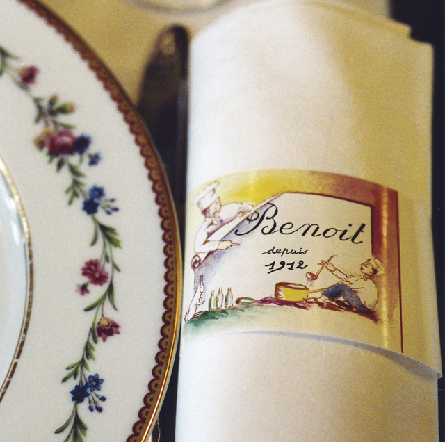
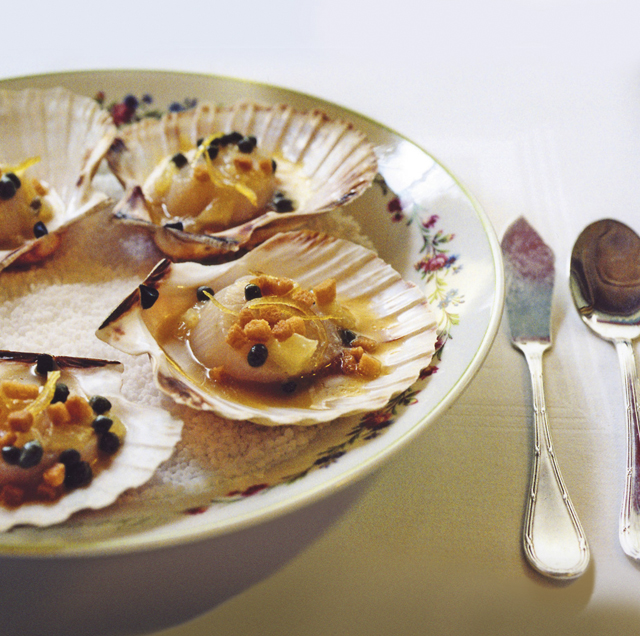

Открытый Бенуа Матрэ в 1912 г. ресторан очень быстро стал первоклассным заведением, полным жизни местом, где хозяин в теплой и душевной атмосфере принимал своих гостей. Алан Дюкасс, приобретя Benoit в апреле 2005 г., решил продолжить эту характерную традицию бистро, но при этом внести необходимые новшества. Через обе распахивающиеся двери ресторана попадаешь в типичный парижский мир бистро от Бенуа: деревянные панели с плиткой, медно-красные бархатные скамьи, гравированные стекла и расписанные под мрамор колонны. На втором этаже гости, желающие еще больше приватности, принимают своих друзей в особом салоне. В этой дружеской и сердечной атмосфере шеф-повар Давид Ратгебер дает гостям возможность открыть для себя типичные блюда традиционной французской кухни: виноградные улитки с маслом с чесноком и пряностями, фирменное кассуле с белой фасолью, заварное пирожное «Benoit». В дополнение к этой богатой кухне винная карта представляет главные винодельческие регионы, которые составляют славу Франции.


{kind=link}
{kind=link}